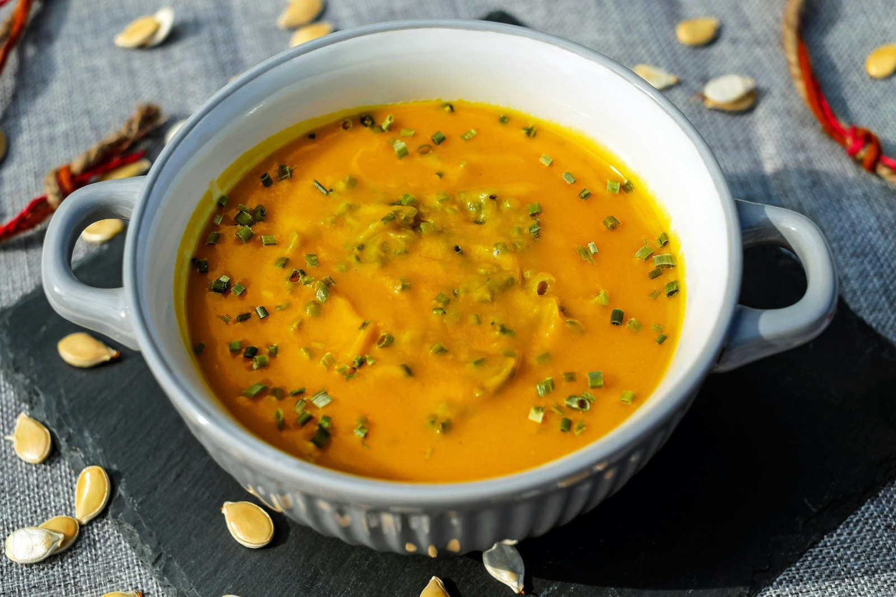

Sopa De Abóbora
1kg de abóbora descascada e picada
1 cebola picada
2 dentes
de alho picado
1 cenoura picada
1L de caldo de legumes
2 colheres de sopa de
azeite, sal e pimenta do reino
1/2 xícara de creme de leite